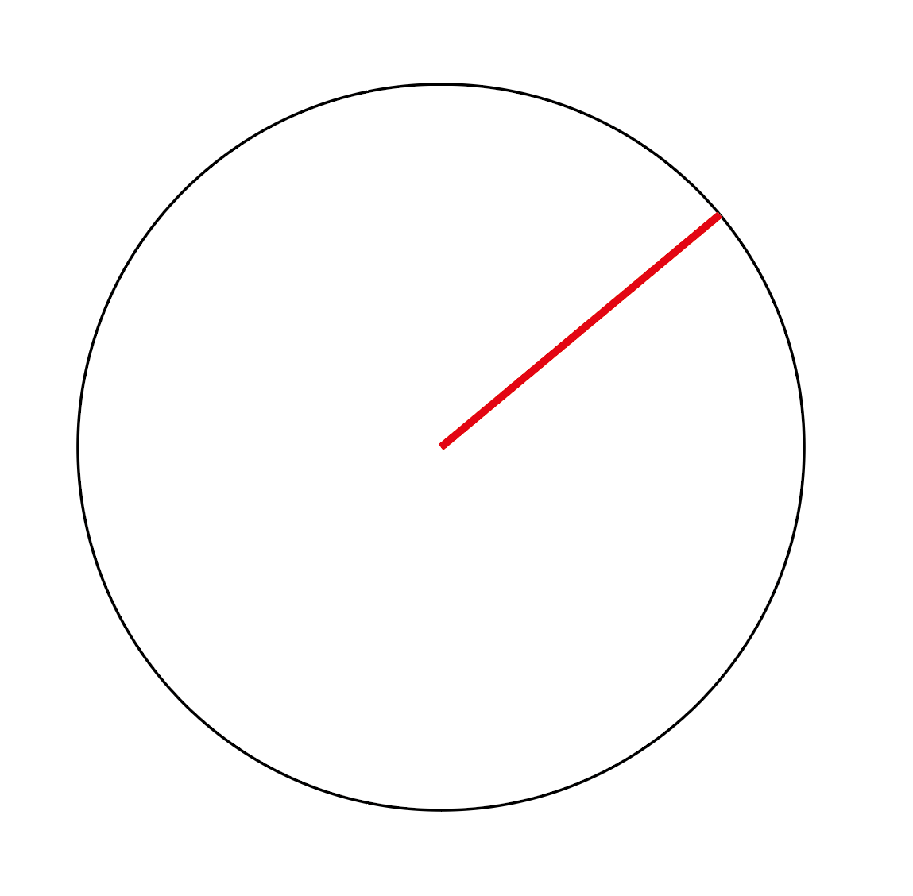
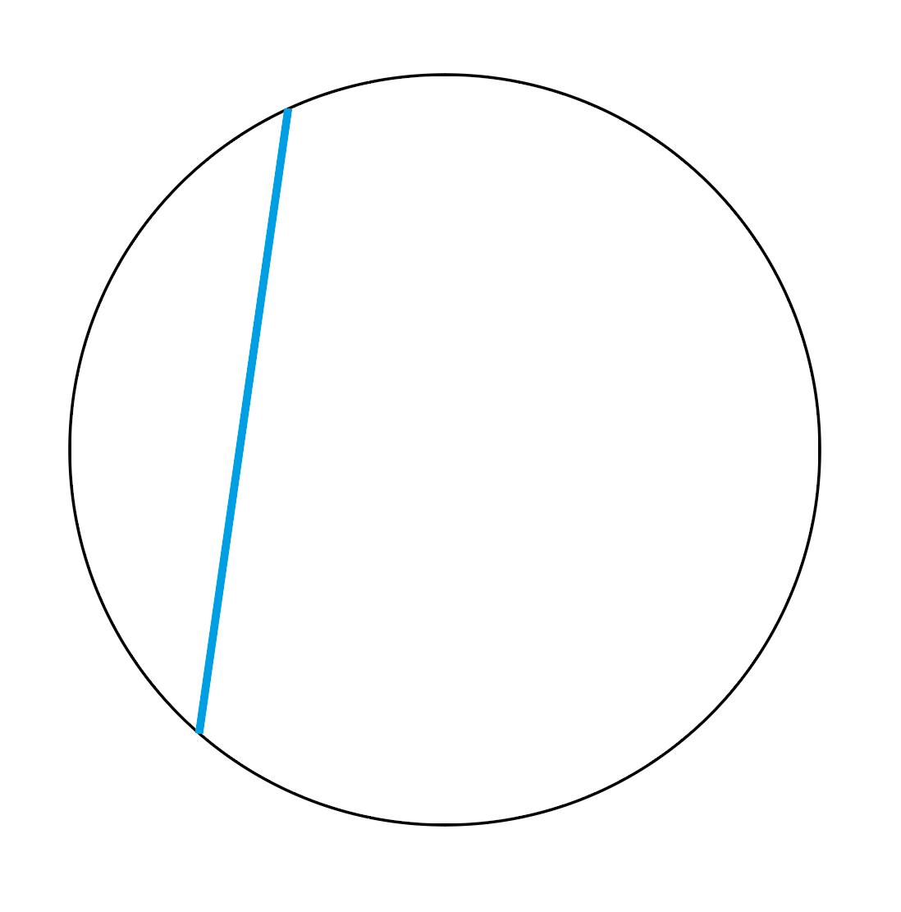
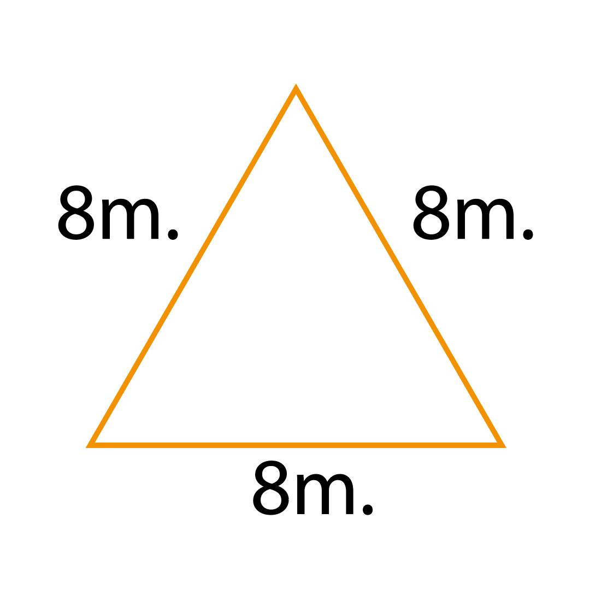

1. Resuelve la siguiente resta: 64 - 27 =
2. Resuelve la siguiente multiplicación: 28 x 17 =
3. Si 7 naranjas cuestan $84 pesos ¿Cuánto costarán 10 naranjas?
4. ¿Cómo expresarías 56% en una fracción?
5. Calcula el promedio de los siguientes valores: 10, 8, 9, 10, 7, 8
6. Observa la circunferencia y elige lo que está marcado con color rojo 
7. Observa la circunferencia y elige lo que está marcado con color azul 
8. Si tenemos 8 chocolates y los repartimos entre 5 personas ¿Cuánto le toca a cada persona?
9. ¿Cuántos metros tiene un kilómetro?
10. ¿Cuál es el perímetro de la siguiente figura? 
11. ¿Qué número es más grande? 0.198 ó 0.7
12. ¿Qué número es más grande?456,000,000 ó 3,350,000,000